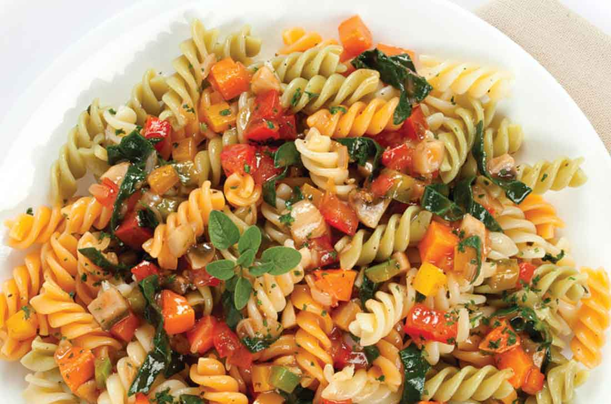

MUNDO VEGGIE
RATATOUILLE

Ingredientes:
- 3 tomates
- 1 pimiento verde
- 2 dientes de ajo
- 1 berenjena
- 1 calabacín
- 1 cebolla blanca
- 1 pimiento rojo
- Sal al gusto
- Pimienta en polvo al gusto
- Aceite de oliva
- Tomillo al gusto
- Romero al gusto
- 2 hojas de laurel
Como hacer el ratatouille paso a paso:
- Para comenzar, pelaremos el ajo y la cebolla, y los picaremos en láminas muy delgadas.
- Luego, lavaremos los tomates y los picaremos en ruedas delgadas.
- Para continuar, lavaremos los pimentones, la berenjena y los calabacines. Les quitaremos los extremos y las semillas (en el caso de los pimentones), los picaremos en rodajas, y conservaremos cada verdura por separado.
- Ahora calentaremos un poco de aceite en una olla, a fuego medio. Una vez caliente, vamos a sofreír la cebolla y el ajo, durante cinco minutos, removiendo constantemente. Al terminar el tiempo de cocción, retiraremos la olla del fuego, pero dejaremos las verduras adentro.
- También calentaremos aceite en una sartén, para ir cocinando las verduras individualmente, y que así conserven mejor su sabor. Empezaremos con los trozos de berenjenas, los cuales cocinaremos durante cinco minutos para suavizarlos, después de salpimentar y mezclar.
- Terminado el tiempo de cocción, pasaremos las berenjenas cocidas a la olla, con la cebolla y el ajo.
- Calentaremos más aceite en la sartén, a fuego medio, y esta vez cocinaremos los pimentones de ambos colores, también durante cinco minutos y luego de salpimentarlos.
- Los pasaremos también a la olla y repetiremos el procedimiento con los calabacines. Una vez salpimentados y cocidos por cinco minutos, haremos lo mismo con los tomates, pero esta vez por 10 minutos. También salpimentaremos y finalmente, los pasaremos a la olla.
- Ya con todas las verduras en la olla, las mezclaremos y sazonaremos con una hoja de laurel, un toque de tomillo y otro de romero. Luego, calentaremos la preparación a fuego bajo y una vez caliente, dejaremos que se cocine durante 10 minutos más.
- Al terminarse este tiempo, probaremos la ratatouille para verificar la sazón, y si hace falta, la corregiremos con mal sal y /o pimienta.
- Eso es todo. La ratatouille ya está lista para servirse, si deseas consumirla caliente. Sin embargo, este plato también puede consumirse frío. Si deseas una presentación más agradable visualmente, puedes alternar las rodajas de diferentes vegetales o diferentes colores.
TORTILLA DE VERDURAS
Ingredientes:
- 6 Huevos
- 1 Morron verde
- 1 Morron Rojo
- 250 gramos de chaucha
- 2 Tomates
- 100 gramos de champiñones
- 3 cucharadas de leche
- Sal al gusto
- Pimienta en polvo al gusto
- Aceite de oliva
Como hacer la torilla paso a paso:
- Lava, despunta y trocea las chauchas. Cuécelas en agua salada 10 minutos y escúrrelas. Pela y corta los tomates en dados y los morrones en tiritas. Pela y pica finamente la cebolla, y lava y lamina los champiñones.
- Rehoga 8 minutos la cebolla en 4 cucharadas de aceite. Incorpora las chauchas y los morrones y sofríe 6 minutos. Incorpora los champiñones y cuece 3 minutos. Por último, añade el tomate, sazona y cuece 3 minutos más.
- Bate los huevos con la leche sin que llegue a hacer espuma. Sazona y añade las verduras. Calienta 1 cucharada de aceite en una sartén antiadherente y añade la mezcla de la tortilla. Deja que se cuaje a fuego medio.
- Cuando esté cuajada por la base, dale la vuelta rápidamente utilizando un plato que sea más grande que la sartén. Deslízala de nuevo a la sartén y cocínala por el otro lado hasta que cuaje.
- Sírvela recién hecha.
PASTA CON VEGETALES
Ingredientes:
- 400 gr Pasta tornillo
- 3 cucharadas Aceite de Oliva
- 1 diente Ajo machacado
- 2 cucharaditas Jengibre picado
- 1 Zanahoria pelada y picada
- 1/2 Cebolla picada
- 1 Pimiento Verde y 1 amarillo pequeños y picados
- 200 gr Champiñones en cubos
- 300 gr tomates en cubos pequeños
- 2 cucharadas Puré de tomate
- 1 cucharada Orégano finamente picado
- 1 cucharada Romero finamente picado
- 150 gr Espinacas picadas
- 50 gr Mantequilla
Como hacer la pasta paso a paso:
- Cuece la pasta en 4 litros de agua hirviendo, hasta que quede al dente.
- Calienta el aceite en un sartén grande. Agrega el ajo, el jengibre, la zanahoria y la cebolla y cocina durante 5 minutos o hasta que la cebolla esté suave y acitronada, mueve constantemente.
- Agrega los pimientos y cocina de 3 a 4 minutos sin dejar de mover. Agrega los champiñones, el tomate y el puré de tomate.
- Tapa y cocina a fuego bajo durante 15 minutos. Agrega las espinacas y cocina durante otros 2 minutos o hasta que se hayan ablandado.
- Vierte la pasta en un platón grande y agrega las verduras. Mezcla hasta integrar completamente. Salpimienta y sirve caliente.
BUEN PROVECHO
Tenemos opciones:
- Vegetarianas
- Veganas
- Postres